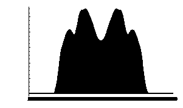

By Warren D. Smith, August 2010. (Skip to conclusion)
This page is intended to be the best-available compendium of information about the probabilities of different pathologies in 3-candidate instant runoff voting (IRV) elections. The "total paradox probability" in such elections, i.e. the probability that at least one among the 8 pathologies {Q, R, U, V, W, X, Y, Z} listed below (note that set does not include S and T) occur in a random election, is found to be
in our three different probability models (defined below) respectively. But if we restrict attention to elections in which the IRV process matters, i.e. in which the IRV and plain-plurality winners differ (i.e. exactly the elections IRV-advocates tend to cite as examples of the "success" of the Instant Runoff Voting process), the total paradox probability becomes stunningly large:
For the most part, this was not previously recognized. This goes a long way toward explaining why it has been so incredibly easy for people like me to find pathologies in real-world IRV elections, seemingly most of the time we ever looked at any interesting IRV election for which we could obtain enough data, and seemingly especially in the elections cited by IRV-advocates as "great successes" for IRV.
These numbers appear a rather serious indictment of Instant Runoff Voting as a decision-making process, as well as hurting its enactment/repeal chances. These large probabilities differ from the perception advanced by the IRV-advocacy group "FairVote," formerly named the "Center for Voting and Democracy." E.g. FairVote's "senior analyst" Steven Hill and the head of Fairvote, Rob Richie, are quoted in the 2008 popular science book Gaming the Vote by William Poundstone (page 268), thus:
[FairVote's] position is that such paradoxes are too rare to worry about. "We've had thousands of [IRV] elections and it's not an issue," said Rob Richie. Steven Hill, a senior analyst with [FairVote] dismisses "these mathematical paradoxes that while in theory are interesting for mathematicians to doodle around on their sketch pads, in fact have no basis in reality... it's also possible that a meteorite will strike Earth and wipe out life... but probably not for a few more million years."
FairVote, Richie, and Hill have all cited various specific IRV elections as "great successes," including Burlington Vermont USA 2009, Ireland 1990, and the Australian House elections of 2007, which actually contained pathologies such as nonmonotonicity (a fact they, during these laudings, left unmentioned). Indeed, despite me and others pointing out these and other examples to FairVote repeatedly for many years, they continue to maintain to this very day
In terms of the frequency of non-monotonicity in real-world elections: there is no evidence that this has ever played a role in any IRV election – not the IRV presidential elections in Ireland, nor the literally thousands of hotly contested IRV federal elections that have taken place for generations in Australia, nor in any of the IRV elections in the United States.
– FairVote webpage titled "Monotonicity and IRV – Why the Monotonicity Criterion is of Little Import" downloaded 24 August 2010; our emphasis added.
0------------J-----*------------K----------L----------1
in this picture, the candidates dropped randomly on the line segment (0,1)
are named J, K, and L; and the voter located at * votes "J>K>L."
In the Quas and Dirichlet models the probability of any particular event defined by linear inequalities is proportional to a polytope volume in a C-dimensional or (C!-1)-dimensional space, respectively. It is possible to compute all these as exact rational numbers, in principle. For finite instead of infinite V, it comes down to counting lattice points inside polytopes, and that is in principle doable exactly as an "Ehrhart polynomial(V)" formula. In the REM, the probabilities instead arise from polytope volumes in a nonEuclidean spherical geometry. These are also in principle expressible exactly in terms of "Schläfli functions."
However, I'm not doing any of that here. I'm just using Monte Carlo inexact evaluation.
However, it looks to me now that all the Quas 1D probabilities tabulated in the blue table can be written as rational numbers with denominator=360, and all those in the yellow table with denominator=1800. I.e. our inexact Quas evaluations, if these conjectures are true (and they appear to be) can trivially be converted into exact ones. For example, the approximate number "6.9446" from the blue Quas table is 2500.056/360 which presumably means the corresponding exact answer is 2500/360=125/18=6.94444... and in fact this is true.
The Monte Carlo data is presently insufficiently precise to determine the corresponding magic denominators for the Dirichlet model, but it strongly supports the idea that for the blue table, it is some multiple of 41472, while for the yellow table, it is a multiple of 12780.
Consider the following 10 possible paradoxes that could afflict a 3-candidate Instant Runoff Voting (IRV) election with winner A and second-place finisher B.
In cases S and T, a better word than "paradox" or "pathology" might be "phenomenon." That is, S and T cannot be regarded as "flaws" in the IRV election process, they are just phenomena that would have happened with those votes for any election process. That is why our "total paradox probability" includes only the 8 pathologies {Q, R, U, V, W, X, Y, Z} and not either S or T.
Professor Jack Nagel has argued R also should have been un-included. For that, see §5.
For discussion of a particular IRV election containing almost all of these pathologies simultaneously, see completely idiotic IRV election.
There are 1024 possible combinations of those phenomena or their negations, which we denote by a 10-bit binary string. For example 0000100010 means "U and Y occur but QRST_VWX_Z all do not." We list every possible 10-bit string along with an IRV election example allegedly yielding precisely that combination of pathologies – and the probability of occurrence of that combination in our three probability models. (Bitstrings omitted if that configuration impossible, which is why there are many fewer than 1024 lines in our table.) Each percentage in the next two tables is based on 25×1010 Monte-Carlo experiments and therefore has additive standard error ±0.0001 or closer, i.e. please read "33.3333%" as "(33.3333±0.0001)%." The total computer time (2006-era personal computer) was ≈30 hours.
| QRSTUVWXYZ | Election Example | REM Prob. | Dirichlet Prob. | Quas-1D Prob. |
|---|---|---|---|---|
| 0000000000 | ABC= 0, ACB= 2, BAC= 0, BCA= 1, CAB= 0, CBA= 0 | 69.0762% | 82.6390% | 61.1110% |
| 0001000000 | ABC= 0, ACB= 7, BAC=12, BCA= 0, CAB= 6, CBA= 0 | 6.3361% | 3.3757% | 11.3890% |
| 0001000100 | ABC=15, ACB= 0, BAC=20, BCA= 0, CAB=10, CBA= 0 | 7.8076% | 2.7826% | 8.0555% |
| 0001010100 | ABC=20, ACB= 0, BAC=16, BCA=14, CAB=15, CBA= 0 | 2.8818% | 0.9163% | 0.0000% |
| 0101000000 | ABC=23, ACB=29, BAC=17, BCA=40, CAB= 6, CBA= 0 | 0.0164% | 0.0096% | 0.0000% |
| 0101000100 | ABC=18, ACB= 0, BAC= 8, BCA=15, CAB=10, CBA= 0 | 1.5332% | 1.0079% | 0.0000% |
| 0101010100 | ABC=26, ACB= 0, BAC=16, BCA=23, CAB=18, CBA= 0 | 0.1903% | 0.0675% | 0.0000% |
| 1000000010 | ABC= 0, ACB=13, BAC= 0, BCA=12, CAB= 6, CBA= 0 | 0.0000% | 0.6970% | 7.0001% |
| 1000001010 | ABC= 0, ACB=19, BAC= 0, BCA=18, CAB=12, CBA= 0 | 0.0000% | 0.1087% | 2.3750% |
| 1000100010 | ABC= 0, ACB=25, BAC= 6, BCA=18, CAB=18, CBA= 0 | 0.7542% | 0.2211% | 0.0000% |
| 1000101010 | ABC= 0, ACB=22, BAC= 0, BCA=21, CAB=16, CBA= 0 | 1.4849% | 0.8830% | 4.5139% |
| 1001000010 | ABC= 0, ACB=13, BAC= 4, BCA=14, CAB=10, CBA= 0 | 0.0000% | 0.2796% | 1.3333% |
| 1001001010 | ABC= 0, ACB=15, BAC= 0, BCA=20, CAB=10, CBA= 0 | 0.0000% | 0.0866% | 1.7916% |
| 1001100010 | ABC= 0, ACB=13, BAC= 6, BCA=12, CAB=12, CBA= 0 | 0.5816% | 0.1912% | 0.0000% |
| 1001101010 | ABC= 0, ACB=25, BAC= 0, BCA=30, CAB=20, CBA= 0 | 0.5637% | 0.4842% | 2.4305% |
| 1010000000 | ABC= 6, ACB= 7, BAC= 0, BCA=12, CAB= 6, CBA= 0 | 0.0000% | 0.7006% | 0.0000% |
| 1010000001 | ABC=13, ACB= 0, BAC= 0, BCA=12, CAB= 6, CBA= 0 | 0.0000% | 0.8733% | 0.0000% |
| 1010001000 | ABC= 9, ACB=10, BAC= 0, BCA=18, CAB=12, CBA= 0 | 0.0000% | 0.0901% | 0.0000% |
| 1010001001 | ABC=19, ACB= 0, BAC= 0, BCA=18, CAB=12, CBA= 0 | 0.0000% | 0.0938% | 0.0000% |
| 1010100000 | ABC=12, ACB=13, BAC= 6, BCA=18, CAB=18, CBA= 0 | 1.3645% | 0.1487% | 0.0000% |
| 1010100001 | ABC=25, ACB= 0, BAC= 6, BCA=18, CAB=11, CBA= 7 | 0.6750% | 0.1497% | 0.0000% |
| 1010101000 | ABC=11, ACB=11, BAC= 0, BCA=21, CAB=16, CBA= 0 | 1.5123% | 0.5507% | 0.0000% |
| 1010101001 | ABC=22, ACB= 0, BAC= 0, BCA=21, CAB=16, CBA= 0 | 0.6668% | 0.5181% | 0.0000% |
| 1011000000 | ABC= 5, ACB=11, BAC= 3, BCA=18, CAB=10, CBA= 0 | 0.0000% | 0.4084% | 0.0000% |
| 1011000100 | ABC= 8, ACB= 8, BAC= 3, BCA=18, CAB=10, CBA= 0 | 0.0000% | 0.3064% | 0.0000% |
| 1011001000 | ABC= 5, ACB=12, BAC= 0, BCA=23, CAB=11, CBA= 0 | 0.0000% | 0.0677% | 0.0000% |
| 1011001100 | ABC= 9, ACB= 8, BAC= 0, BCA=22, CAB=11, CBA= 0 | 0.0000% | 0.0990% | 0.0000% |
| 1011010100 | ABC=10, ACB=10, BAC= 6, BCA=24, CAB=15, CBA= 0 | 0.0000% | 0.0672% | 0.0000% |
| 1011011100 | ABC=10, ACB=10, BAC= 0, BCA=30, CAB=15, CBA= 0 | 0.0000% | 0.0618% | 0.0000% |
| 1011100000 | ABC=11, ACB=17, BAC= 9, BCA=24, CAB=22, CBA= 0 | 0.5674% | 0.0468% | 0.0000% |
| 1011100100 | ABC=14, ACB=14, BAC= 9, BCA=24, CAB=22, CBA= 0 | 0.9166% | 0.0898% | 0.0000% |
| 1011101000 | ABC=11, ACB=17, BAC= 0, BCA=33, CAB=22, CBA= 0 | 0.1713% | 0.0848% | 0.0000% |
| 1011101100 | ABC=14, ACB=14, BAC= 0, BCA=33, CAB=22, CBA= 0 | 0.3934% | 0.2041% | 0.0000% |
| 1011110100 | 0.9354% | 0.1557% | 0.0000% | |
| 1011111100 | ABC=15, ACB=15, BAC= 0, BCA=40, CAB=25, CBA= 0 | 0.4667% | 0.3326% | 0.0000% |
| 1111000101 | ABC=16, ACB= 0, BAC= 3, BCA=18, CAB=10, CBA= 0 | 0.0000% | 0.5566% | 0.0000% |
| 1111001101 | ABC=17, ACB= 0, BAC= 0, BCA=22, CAB=11, CBA= 0 | 0.0000% | 0.0738% | 0.0000% |
| 1111010101 | ABC=20, ACB= 0, BAC= 6, BCA=24, CAB=15, CBA= 0 | 0.0000% | 0.0823% | 0.0000% |
| 1111011101 | ABC=20, ACB= 0, BAC= 0, BCA=30, CAB=15, CBA= 0 | 0.0000% | 0.0347% | 0.0000% |
| 1111100101 | ABC=28, ACB= 0, BAC= 9, BCA=24, CAB=16, CBA= 6 | 0.4807% | 0.0665% | 0.0000% |
| 1111101101 | ABC=28, ACB= 0, BAC= 0, BCA=33, CAB=22, CBA= 0 | 0.1528% | 0.1374% | 0.0000% |
| 1111110101 | ABC=30, ACB= 0, BAC=11, BCA=29, CAB=20, CBA= 5 | 0.3003% | 0.0807% | 0.0000% |
| 1111111101 | ABC=30, ACB= 0, BAC= 0, BCA=40, CAB=25, CBA= 0 | 0.1708% | 0.1689% | 0.0000% |
Below is a smaller summary table of some of the most-requested pathology-probability information in our three probability-models (All of the numbers in the below tables are derivable by adding up appropriate sets of numbers from the above master table):
| Phenomenon | REM | Dirichlet | Quas 1D |
|---|---|---|---|
| Participation failure W∪X | 20.6286% | 10.2593% | 19.1666% |
| Nonmonotonicity U∪V | 15.2305% | 5.7436% | 6.9445% |
| V: ("less is more" nonmonotonicity) | 4.9453% | 1.9675% | 0.0000% |
| U: ("more is less" nonmonotonicity) | 12.1583% | 4.5138% | 6.9445% |
| Y: Condorcet winner eliminated ("thwarted majority") | 3.3843% | 2.9514% | 19.4445% |
| Z: Reversal "winner=loser" failure | 2.4464% | 2.8356% | 0.0000% |
| R: All scoring rules agree B wins, but IRV says A wins (failure of "sniff test") | 2.8446% | 2.2858% | 0.0000% |
| W: Abstention failure: deleting A-bottom voters stops A from winning | 5.5827% | 4.0798% | 11.1111% |
| X: Would be strategic mistake for more voters of some single type to come | 16.2296% | 7.2916% | 8.0555% |
| T: Plurality and IRV winners differ | 24.4661% | 12.3263% | 25.0000% |
| S: Condorcet cycle | 8.7740% | 6.2500% | 0.0000% |
| Q∪R∪U∪V∪W∪X∪Y∪Z ("total paradox probability") | 24.5877% | 13.9853% | 27.5000% |
| Both kinds of participation failure simultaneously W∩X | 1.1837% | 1.1121% | 0.0000% |
| Both kinds of nonmonotonicity simultaneously U∩V | 1.8732% | 0.7378% | 0.0000% |
| Q∪V: Betraying B makes either B or C win (where either way the betrayers prefer that to A winning) | 15.2305% | 10.1852% | 19.4445% |
| Q: Loser drop-out paradox: If B drops out, that switches the winner from A to C. Also (which happens in exactly the same set of elections) "Favorite betrayal"; voters with favorite B, by betraying B, make C win (whom they prefer as the "lesser evil" over current winner A) | 12.1583% | 9.2014% | 19.4445% |
And below is the same table, but restricted to elections in which the IRV process matters, i.e. in which the IRV and plain-plurality winners differ. (Warning: The error bars are approximately twice as wide as in the tables above.) This almost always makes pathologies substantially more likely:
| Phenomenon | REM | Dirichlet | Quas 1D |
|---|---|---|---|
| Participation failure W∪X | 69.3391% | 65.0225% | 49.1106% |
| Nonmonotonicity U∪V | 35.8569% | 26.5477% | 9.7221% |
| V: ("less is more" nonmonotonicity) | 20.2130% | 15.9622% | 0.0000% |
| U: ("more is less" nonmonotonicity) | 23.3002% | 16.5714% | 9.7221% |
| Y: Condorcet winner eliminated ("thwarted majority") | 4.6809% | 8.4507% | 22.2219% |
| Z: Reversal "winner=loser" failure | 4.5149% | 9.7419% | 0.0000% |
| R: All scoring rules agree B wins, but IRV says A wins (failure of "sniff test") | 11.6267% | 18.5445% | 0.0000% |
| W: Abstention failure: deleting A-bottom voters stops A from winning | 7.8424% | 14.8901% | 16.8886% |
| X: Would be strategic mistake for more voters of some single type to come | 66.3350% | 59.1548% | 32.2220% |
| T: Plurality and IRV winners differ | 100.0000% | 100.0000% | 100.0000% |
| S: Condorcet cycle | 18.6193% | 25.3526% | 0.0000% |
| Q∪R∪U∪V∪W∪X∪Y∪Z ("total paradox probability") | 74.1026% | 72.6136% | 54.4439% |
| Both kinds of participation failure simultaneously W∩X | 4.8383% | 9.0224% | 0.0000% |
| Both kinds of nonmonotonicity simultaneously U∩V | 7.6563% | 5.9859% | 0.0000% |
| Q∪V: Betraying B makes either B or C win (where either way the betrayers prefer that to A winning) | 35.8569% | 41.7844% | 22.2219% |
| Q: Loser drop-out paradox: If B drops out, that switches the winner from A to C. Also (which happens in exactly the same set of elections) "Favorite betrayal"; voters with favorite B, by betraying B, make C win (whom they prefer as the "lesser evil" over current winner A) | 23.3002% | 33.8034% | 22.2219% |
When IRV-pathologies get more likely when IRV & plurality winners differ (and they usually do get more likely!), that suggests that IRV, counter-intuitively, actually is worse than plain-plurality voting – at least as far as that particular paradox is concerned, and in 3-way elections.
Anthony Quas pointed me in the right direction to find a bug in my Quas-generator. My Dirichlet generator was also buggy due to some imbecile on Wikipedia publishing an incorrect sorting network. Both now repaired.
I now agree with the scientific literature values for every number I'm aware of in these tables which has already been computed in that literature (over a dozen)? To make that clearer, the below table lists some exact values claimed in the scientific literature versus our Monte Carlo estimates from the blue table above. (I may sometimes be listing somebody as "discoverer," who actually was not the first. Quite a few of these values were independently discovered by several authors.)
| Literature Value | Our Monte-Carlo (std.err.≤±0.00025%) | Discoverer |
|---|---|---|
| 397/6912≈5.74363% | 5.7434% | Lepelley Chantreuil Berg p.141 |
| 13/288≈4.51389% | 4.5137% | Lepelley Chantreuil Berg corr.1 |
| 17/864≈1.96759% | 1.9676% | Lepelley Chantreuil Berg corr.3 |
| 7/96≈7.29167% | 7.2914% | Lepelley & Merlin table5 |
| 47/1152≈4.07986% | 4.0797% | Lepelley & Merlin table5 |
| ≈16.230% | 16.2294% | Lepelley & Merlin table5 |
| ≈5.583% | 5.5826% | Lepelley & Merlin table5 |
| 5/72≈6.94444% | 6.9446% | Quas |
| 1/16=6.25% | 6.2497% | Gehrlein |
| (3arcsec(3)-π)/(2π)≈8.77398% | 8.7738% | Guilbaud |
| 17/576≈2.95139% | 2.9513% | Gehrlein |
| ≈3.384% | 3.3842% | Gehrlein |
| 0 | 0.0000% | Black |
| 71/576≈12.32639% | 12.3260% | Lepelley Louichi Smaoui |
Please report any errors/corrections to warren.wds AT gmail.com.
These based on old run at lower precision??? Redo with new hi-precn numbers to get slight changes
Prof. Jack Nagel asked what the "total paradox probabilities" would be if R were not included as a "paradox." (Note that S and T already were not included.) His question gives us an excellent opportunity to demonstrate the use of the tables. The only possible binary codes representing "R plus some subset of S and T, but no other letters" are
Of these, the only one which actually occurs with nonzero probability (see the pink table) is 0101000000 with probabilities 0.0164%, 0.0096%, 0.0000%. We may therefore obtain Nagel's "no-R total paradox probabilities" by subtracting these figures from the "total paradox probabilities" we gave in the blue table. The results are
in our three different probability models respectively (error bars≤±0.00025% as usual). Restricted to elections in which the IRV process matters, the answers instead are
where note the normalization constants 0.24466 and 0.12326 arise from the
total-T line of the blue table.
The reason these adjustments are so small is that R is a rare paradox, and the occasions where
R arises unaccompanied by any other paradoxes in
Another example: "spoilers." IRV propagandists have often claimed that IRV "eliminates the spoiler effect." As you can see from the fact that paradox "Q" happens with positive probabilities (ranging from 9.2% to 33.8% in our 3 probability models for both "all elections" and elections where IRV "matters," i.e. 6 scenarios total), that claim was a lie.
However, can we at least make the weaker claim that IRV reduces the chance of a spoiler scenario versus plain plurality voting? The answer in 3-candidate IRV elections is "yes." To see that, notice that every 3-candidate election where the plurality and IRV winners differ (phenomenon T), is a plurality-voting spoiler scenario (with IRV winner A, plurality winner B, and spoiler C). There also could be elections in which the IRV-winner A is the plurality-spoiler; but since those elections are precisely those in which B is a "Condorcet loser" and A is not plurality winner (hence B is), they already were counted in set T. There also could be elections where the the plurality and IRV winner both are A, i.e. the same (i.e. we do not have phenomenon T) and there is a plurality-spoiler, who then must be B (which happens if and only if either C is Condorcet winner, i.e. we have pathology Y, or there is a Condorcet cycle of form A>B>C>A, i.e. phenomenon S). Therefore prob(T)+prob((Y∪S)∩¬T) equals the chance that at least one plurality-spoiler exists. Then looking up the numbers in our tables we see prob(Q)<prob(T)+prob((Y∪S)∩¬T), and indeed prob(Q)<prob(T), in all 6 of our scenarios, indicating yes: IRV does reduce the spoiler chance in 3-candidate elections.
What about in C-candidate elections with C≥4? Does IRV reduce spoiler chances then (and for which C)? Sorry: those answers seem both un-deducible from the tables here, and non-obvious. But see our separate page about "spoiler candidates" in IRV and plain plurality voting, where the chances are explicitly computed when C=3, and among other things, it is argued that in both the IRV and plain-plurality voting systems in all three of our probability models, the chance goes to 100% that your election contains at least one "spoiler" and hence the probability for "paradox Q" should go to 100% in all three models when C→∞.
THEOREM: As the number C of candidates is made large, the "total paradox probability" for IRV approaches 100% in all three probability models here.
PROOF (INCOMPLETE IN THE QUAS-1D CASE): In the Dirichlet model, Quas 2004 in his theorem 1 showed that the probability of paradox 'U' ("more is less" nonmonotonicity) approached 100% when C→∞. Smith 2009 was able to show the same result in the Random Election Model by redoing Quas's proof with appropriate changes. In the Quas-1D model, a Condorcet winner generically exists (and always exists aside from the possibility of a 2-way tie) as a consequence of Duncan Black's singlepeakedness theorem and it is the candidate located closest to the midpoint. However, when C→∞ Quas found that IRV elects the candidate located at x with probability proportional to a certain probability density ρ(x) with support on (1/6, 5/6) and pictured below.
Therefore IRV falls victim to paradox 'Y' with probability→100%. Since the "total paradox probability" is at least as great as the probabilities of these particular paradoxes, it must approach 100% in all three models, and the proof is complete. Q.E.D.
WHY THAT PROOF WAS INCOMPLETE IN THE QUAS-1D CASE: Actually, the above proof is inadequate because Quas's paper did not prove the existence of ρ(x), although Quas did provide convincing evidence, e.g. the picture above computed by Monte Carlo, for its existence. It seems "obvious" that IRV can exhibit no special favortism for the candidate nearest the midpoint (who automatically is the Condorcet winner), as opposed to any of the other candidates located between 0.499 and 0.501 (whose number approaches ∞); indeed the picture indicates, if anything, IRV is biased against the centermost within this interval. Therefore it is "obvious" that the probability IRV elects this one centermost candidate approaches 0. But this "obviousness" is not a "proof."
It would suffice to prove that after IRV has winnowed the C candidates down to, say, C/logC, the probability→1 (when C→∞) that the centermost candidate has been eliminated.
CONJECTURE: Paradox 'X' also should occur with probability→100% in the Quas-1D model, indeed in all three models.
The tables here were computed by Warren D. Smith, August 2010, using computer. Also see the same results but computed using different random number generator as a safety measure. [If you average the results from this and that page, you could shrink the error bars by a factor of √2.] Smith incorporated results from the following literature sources into his computer program:
Some other sources which I did not consult, but seem plausibly relevant, include:
Beware: Incorrect (but published) results were computed by Crispin Allard and by Eivind Stensholt (and probably others too; unfortunately I myself had computed some incorrect values in CRV web pages). It is quite easy to make your computer get approximately the right value for any given paradox probability. Unfortunately, it also is quite easy to mess up the definitions hence not get it exactly right. (Also, only good random number generators passing all 'Supercrush U01' and Marsaglia 'Diehard' tests should be employed; system-supplied generators usually fail numerous tests in those batteries even as of 2010.) It is usually rather difficult to make your computer get an enormously-wrong estimate. The only case I am aware of where that happened was Allard's paper, which underestimated the nonmonotonicity probability by 3 orders of magnitude by making 4 seperate errors, all biased in the same direction, and apparently never doing any simple "sanity checks."
Update (Nov. 2015): I recently was made aware of the 2009 Dartmouth senior thesis (pdf) by Joe Ornstein titled "Instant Runoff Voting's Startling Rate of Failure." He examines 10000 instant runoff voting elections each in 20 different probabilistic models, including "spatial models." Ornstein is especially interested in "close elections" defined as "any election in which three candidates receive more than 25% of the first-place votes." Depending which of his 20 probabilistic models he uses, Ornstein finds that 7% to 33% of his elections are close. As a fraction of all elections (both close and non-close) 0.6% to 13.5% feature "type I nonmonotonicity" (our paradox "U"), depending which of Ornstein's 20 probability models we use. And Ornstein finds that 13% to 45% of the close elections feature paradox U. Furthermore, the higher paradox percentages coincide with the probability models Ornstein considers more realistic.
Ornstein: "The proportion of non-monotonic IRV elections [is] disturbingly large, large enough to severely question IRV's adequacy as a suitable election reform."
A journal article [Joseph T. Ornstein & Robert Z. Norman: Frequency of monotonicity failure under Instant Runoff Voting: estimates based on a spatial model of elections, Public Choice 161,1 (October 2014) 1-9] later appeared based on this work.
Update (Oct. 2016):
Nicholas R. Miller
gave two presentations at Amer. Political Science Assoc'n meetings in 2012
(he was former president of APSA),
about his papers:
Frequency of monotonicity failure under Instant Runoff Voting
with three candidates: Closeness matters, 2012 & revised 2016
Monotonicity failure under Instant Runoff Voting
with three candidates, 2012
Miller's conclusions seem consistent with mine and with Ornstein's, at least on shallow examination.
That's incredible. Before I had the sense that IRV was bad because paradoxes could happen and weren't so rare. Now it's looking like IRV is benign only in those unproblematic elections where all election methods perform well. In cases where you actually need a better way of voting, IRV is a crapshoot.
– William Poundstone, author of the 2008 popular science book Gaming the Vote, after seeing this page (this was his comment by email).